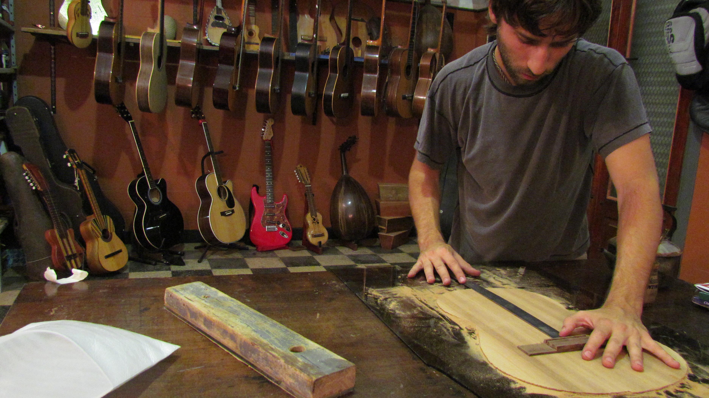

Delledonne, Mariano
Hace más de 12 años se dedica profesionalmente a la Luthería. Se especializa en la construcción, reparación y restauración artesanal de instrumentos de cuerda pulsada entre los que se destacan: guitarras clásicas y variedad de instrumentos latinoamericanos tales como charango, requinto, tres cubano y cuatro venezolano. Sus creaciones artísticas se definen por la combinación de elementos tradicionales, la búsqueda de diseños innovadores y la autenticidad de las piezas. Esta impronta artística logró el Reconocimiento de Excelencia Artesanal de la UNESCO, otorgado por el World Craft Council, en el año 2014.
